An Illustrative Guide To My PhD Thesis
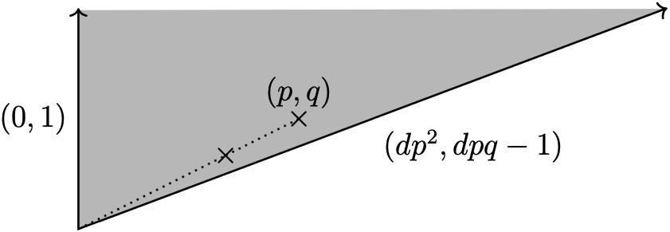
Work in progress
This post is the product of when I was thinking about how to explain my PhD research to prospective employers (and maybe even curious friends). Its purpose is to give the reader a sense of the main result of my thesis. Little attempt at mathematical rigour is made.
AI disclosure: Large parts of this post were drafted by feeding rough handwritten notes into generative AI and lightly editing the output.
The main result
By the end of this post, we should have developed enough theory to roughly understand the following statement:
Let \(L \subset B_{d,p,q}\) be a Lagrangian sphere. Then \(L\) is Lagrangian isotopic, up to twisting, to one of the “standard” spheres.
The plan is to explain this by way of analogy in the two dimensional setting that we can actually visualise (the \(B_{d,p,q}\)s mentioned above are 4-dimensional spaces with the 2-dimensional Lagrangian sphere \(L\) living inside it).
Almost everything below is an exercise in stepping down a dimension: I will build up the whole story—Lagrangians, deformations, plumbing, twisting—in a world flat enough to draw on a page, and then, right at the end, we’ll step back up and I’ll claim that nothing important changes. That claim is a bit of a cheat, but it’s a productive one.
First of all:
What is a Lagrangian?
When we talk of Lagrangians we are thinking of smooth objects (which mathematicians call manifolds) that live inside some larger ambient space (also a manifold) and satisfies some special conditions. Fortunately, in two dimensions—that is, when the ambient space is two dimensional—this is all very simple, a Lagrangian is a one-dimensional curve living inside an oriented two-dimensional surface. “Hold on a minute,” you’ll say, “you’ve snuck in another term in your attempt to define Lagrangian!” You got me, that’s often the way with these kinds of expository articles. Orientability is quite a subtle concept, so we’ll build up to it from the lowest dimension: zero.
Orientation
A zero-dimensional manifold is just a discrete collection of points (imagine the whole numbers dotted along the real number line, although this is really an example of a zero-dimensional submanifold inside a one-dimensional ambient one). An orientation on a zero-dimensional manifold is just an assignment of a plus or minus sign at each point:
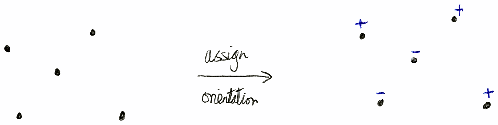
Moving up to one-dimensional manifolds (curves), an orientation here is just a consistent choice of direction all throughout the manifold, e.g.:
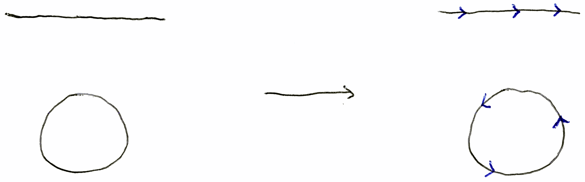
This gives a well-defined notion of left-hand and right-hand sides of the curve, or in the case of the circle, an interior and exterior.
Finally, for two-dimensional manifolds (surfaces), an orientation is a consistent choice of rotational direction all throughout the manifold:
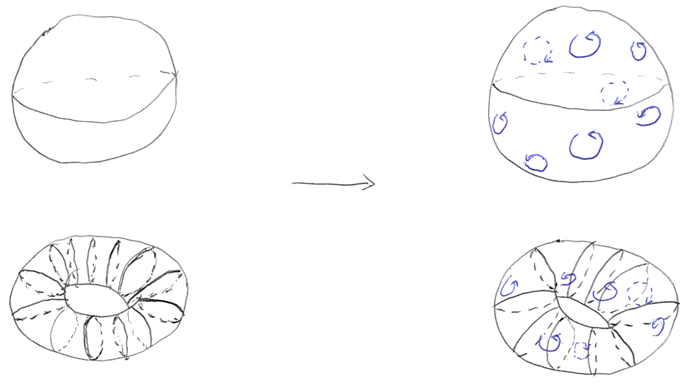
An equivalent way of thinking about this is assigning an outward pointing normal vector to the surface, that is, a collection of arrows on the surface that are orthogonal to it and point in (whatever we decide to be) the outward direction, e.g.:
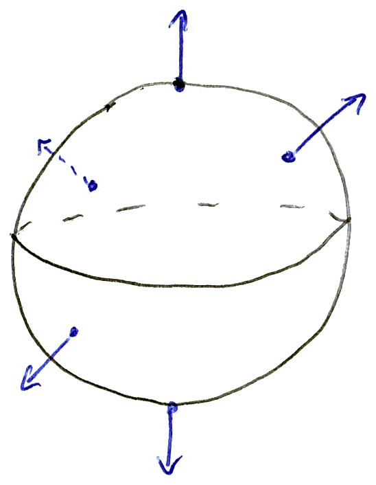
This also yields a notion of interior and exterior of the surface.
You might wonder why this orientation business is necessary, and this is where I make an embarrassing concession and say, well, it’s not entirely obvious in this dimension. To fully appreciate this we need to consider 2-dimensional surfaces living inside 4-dimensional ambient manifolds, but this is too much of a digression for now, so we make the ersatz that Lagrangians are curves living inside oriented 2-dimensional surfaces.
Non-orientable surfaces
To see what non-orientability “looks like” check out this animation (courtesy of Claude) of the Möbius strip. Press the “Trace the surface” button to see how the strip only has one side. Non-orientable surfaces are essentially built up by gluing Möbius strips together.
Lagrangian isotopies
Now that we know what a Lagrangian is, we can easily draw some examples. Both the blue and black curves in the following figure are Lagrangians, the crucial difference between them being that the blue one joins up into a loop—in maths we say this is a closed curve.
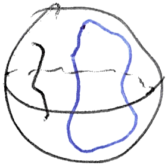
In fact, since mathematicians like to refer to circles as one-dimensional spheres,1 one can make the following (slightly overcomplicated but is designed to elucidate a point) statement: the blue curve is an example of a 1D Lagrangian sphere inside a 2D ambient manifold. This is a 1D analogy of the Lagrangian spheres mentioned in the theorem statement earlier.
This is a good point to clarify what the word standard in the statement of the theorem means; we use standard to refer to a particular object that is special, or canonical in some way. In the example of Lagrangian circles on the 2-sphere we might declare that the equator is standard, or that lines of longitude and latitude are instead. The important things is that “standard” is a choice and is used to highlight something we particularly care about.
Now, let’s discuss what Lagrangian isotopic means. Firstly, a Lagrangian isotopy is a smooth deformation of Lagrangian submanifolds. This is best explained by a picture:
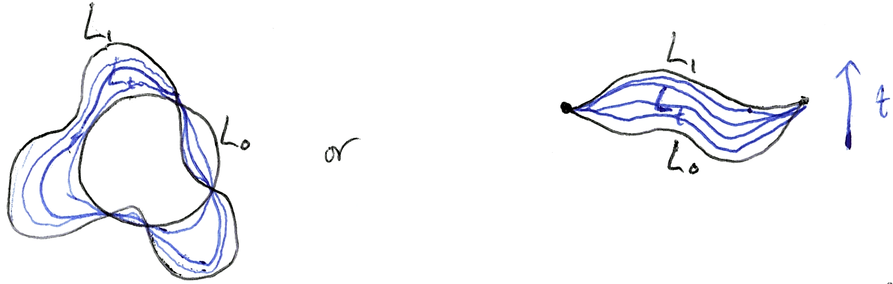
Given a Lagrangian isotopy \(L_t\), we say that \(L_0\) and \(L_1\) are Lagrangian isotopic to one another—that is, to be Lagrangian isotopic simply means there exists a Lagrangian isotopy between two Lagrangians.
The little subscript \(t\) is worth dwelling on for a second. Mathematicians like to use letters to label things (remember “solve for \(x\)” from school), and the letter \(t\) here is one we can think of naively as time: at time \(0\) we have the curve \(L_0\), at time \(1\) we have \(L_1\), and in between we have a whole continuous family of curves \(L_t\) interpolating between them. It may be useful to think of an isotopy as a film playing as \(t\) goes from \(0\) to \(1\).
Let’s think about Lagrangian isotopies of circles on the 2-sphere.2 With a little effort, it’s easy to imagine how any two circles here can be deformed into one another.3 Therefore, the isotopy classification of Lagrangian 1-spheres in the 2-sphere is very simple: up to isotopy there is only one, say the equator—the so-called standard Lagrangian sphere in the 2-sphere. Said in the same manner as the theorem:
Any Lagrangian sphere in the 2-sphere is Lagrangian isotopic to the standard Lagrangian sphere, the equator.
No twisting necessary!
A cylinder, from a sheet of paper
That was a warm-up, and—I’ll be honest—a slightly disappointing one. One class. Nothing to classify. So let’s switch gears and find a more interesting place to live.
Take a rectangular sheet of paper and roll it along its long edge until the two short edges meet. You get a cylinder:
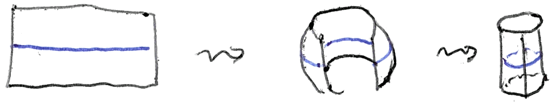
This cylinder is our new 2-dimensional ambient manifold, and the blue circle is a Lagrangian sphere sitting inside it. Notice something important: on the sphere, our blue circle could be shrunk away to nothing, but here it cannot. It wraps the whole way around the tube. There’s no way to slide it off.
Here is a really useful observation, which we’ll use for the rest of the post: the flat rectangle is a perfectly faithful picture of the cylinder, provided we remember the rule that the left edge is glued to the right edge. This is a wonderful bargain, because drawing 2D surfaces sitting in 3D space is hard (for me), whereas drawing rectangles is not. If you’ve ever played an old arcade game where walking off the right of the screen brings you back on the left, you already have the right instinct.
Plumbing: gluing two cylinders together
Suppose we have two of these cylinders, which I’ll call \(C_0\) and \(C_1\), each drawn as a rectangle, and each carrying its own Lagrangian circle—\(L_0\) in \(C_0\), and \(L_1\) in \(C_1\). There is an operation called plumbing that welds them into a single new manifold.
The recipe: pick a small square patch in the middle of each rectangle, rotate the second one by a quarter turn, and then glue the two patches together so that the horizontal direction of one is identified with the vertical direction of the other.
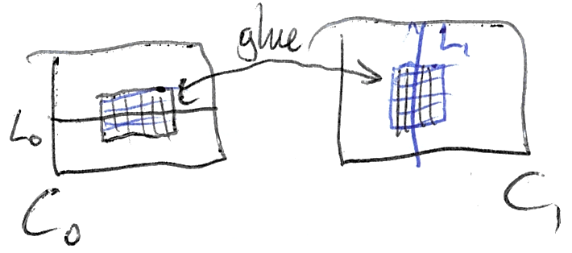
What you end up with is a plus-sign-shaped object: two tubes crossing over each other at a single square of overlap.
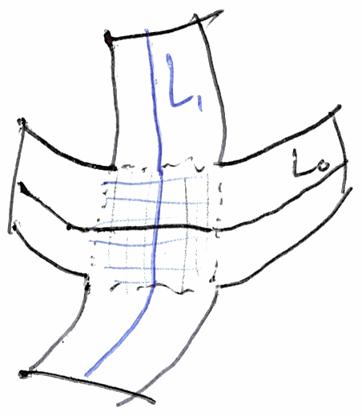
Here’s what is looks like if we glue the short edges of each piece of paper together:
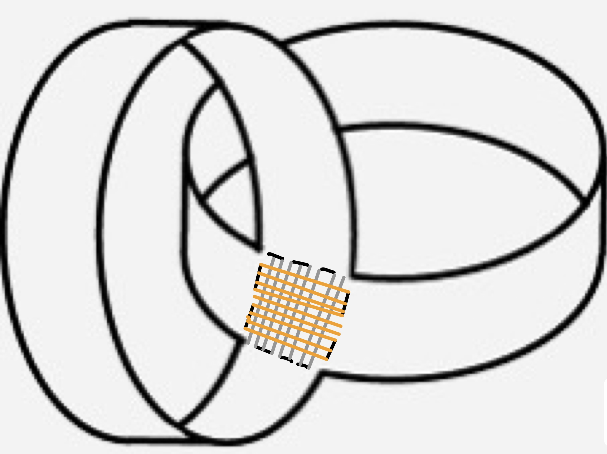
Now here’s the point. Both \(L_0\) and \(L_1\) live in this new manifold, and they cross each other at exactly one point. And—staring at the picture for a moment—we see that there is plainly no way to deform one into the other. \(L_0\) goes around one arm; \(L_1\) goes around the other; a continuous deformation can’t decide to take the other exit. So we have at least two distinct classes of Lagrangian sphere. The classification here is non-trivial. Progress!
Twisting
We can do better than “at least two”, and this is where the real character of the subject shows up.
Go back to a single cylinder, drawn flat as a rectangle. Draw the Lagrangian \(L_0\) as the blue horizontal circle, and draw a second curve, \(a\), running straight from the top edge to the bottom edge. Now perform the following operation: cut the cylinder along \(L_0\), hold one side fixed, rotate the other side through one full turn, and glue it back together. The curve \(a\) gets dragged around with it, and comes out looking like this:
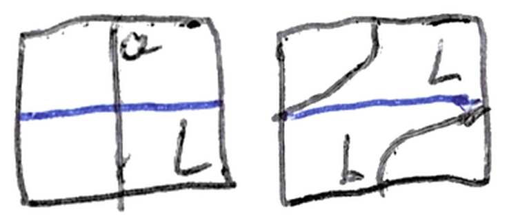
On the actual, rolled-up cylinder, that looks like the curve taking a detour—a spiral—before continuing on its way:
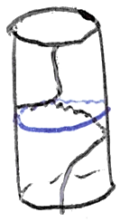
This operation is called a twist,4 and it is the star of the show. The crucial thing about it is that the twist is a genuine, honest symmetry of the cylinder—it doesn’t tear anything, it doesn’t change the shape—and yet it moves curves to genuinely new curves.
Returning to the plumbing, we can twist \(L_1\) about \(L_0\) and the result is a new Lagrangian sphere, one that now runs down one arm, wraps around the crossing, and heads off down the other:
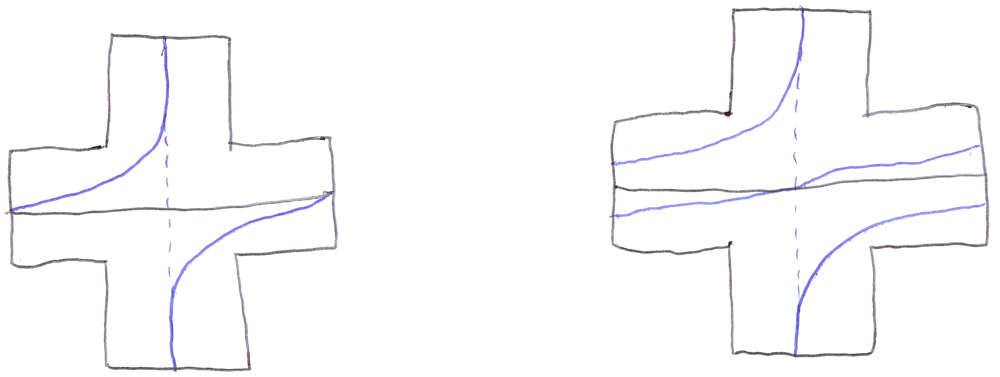
And we can do it again. And again. Each twist produces a Lagrangian sphere that cannot be deformed into any of the previous ones, so:
There are infinitely many non-isotopic Lagrangian spheres in the plumbing.
This is exactly what the words “up to twisting” are doing in my theorem. The classification isn’t a short list. It’s a short list of starting points, together with a set of moves you’re allowed to apply to them.
Stepping back up a dimension
Everything so far has been 1D curves inside 2D surfaces. My thesis is about 2D spheres inside 4D manifolds. To make the leap, I need one more idea—a different way of describing that cylinder, one that doesn’t care what dimension it’s in.
Start with the circle \(C\), all the points at distance \(1\) from the origin in the plane:
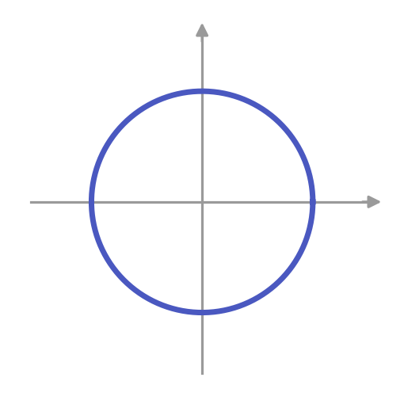
A tangent line to \(C\) at a point is the line through that point which makes a right angle with the radius—the line the point would fly off along if you let go of it:
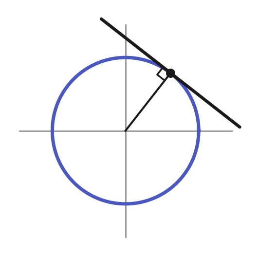
Now take that tangent line and rotate it out of the plane, so that instead of lying flat it sticks straight up:
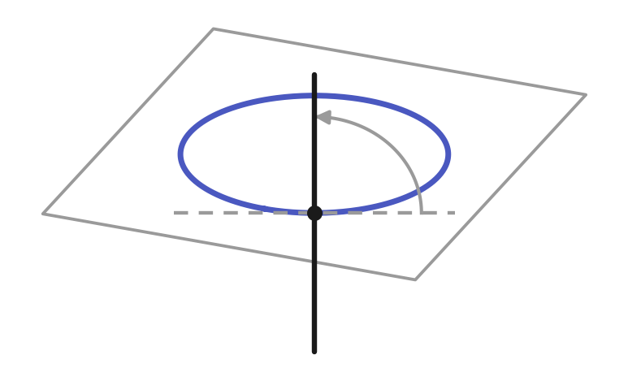
And here is the trick: do this at every point of the circle, all at once. The tangent lines sweep out a cylinder.
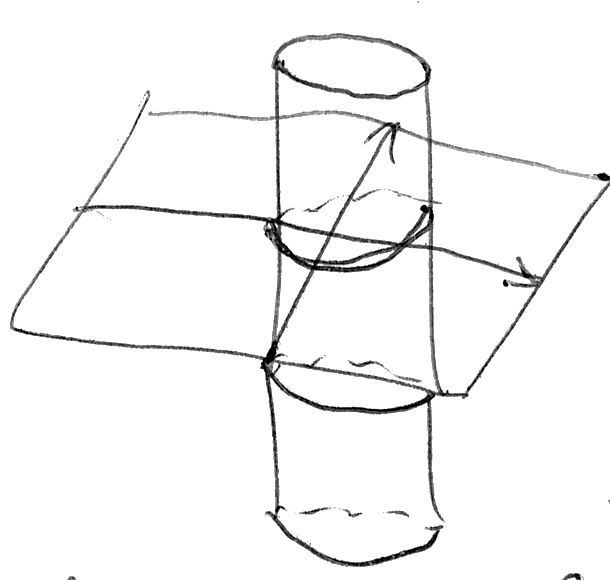
This object—the collection of all the tangent lines to the circle—is called the tangent bundle of the circle.5 It’s the same cylinder we’ve been drawing all along, but now described in a way that makes no reference to rectangles or sheets of paper. And that matters, because this description doesn’t care that we started with a circle.
So let’s not start with a circle. Let’s start with the 2-sphere. At each point of the sphere there is now a tangent plane rather than a tangent line, and gluing all of them together gives the tangent bundle of the 2-sphere:
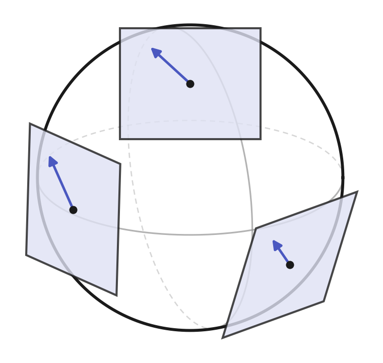
Counting the dimensions we see that the tangent bundle of the 2-sphere is 4D: two for moving around on the sphere, plus two more for choosing a tangent vector at each point. An analogy: suppose you’re flying a jet at cruising altitude6 and you check in with air traffic control. You need to report your current position, heading and speed. The current position can be described using longitude and latitude coordinates, which correspond to the 2 dimensions of the 2-sphere. At that position, your heading is described using a compass (how many degrees from North you are facing) adding another dimension, and the aircraft’s speed contributes the final number, making 4 dimensions total.7 Now, what if instead you’re piloting a levitation device that is perfectly stationary (relative to the 2-sphere). Then your position in longitude and latitude coorindates still makes sense, but this time your speed is zero and your heading doesn’t really make sense. However, this still describes a perfectly valid point in the tangent bundle, and in fact, if we consider all positions on the 2-sphere simultaneously (and imagine that these correspond to a stationary levitation device) then we see that a copy of the 2-sphere lives inside the 4-dimensional tangent bundle—this is called the zero-section, since these points correspond to those with zero “speed”. Crucially, the zero section is actually a Lagrangian submanifold (according to the higher-dimensional definition we haven’t discussed here).8
Here is the payoff. Both of our constructions—plumbing and twisting—were (secretly) described in terms of tangent bundles, patches and cutting, and none of that cared about the dimension. Everything carries over verbatim. Plumb two copies of the tangent bundle of the 2-sphere together and you get a 4D manifold containing two Lagrangian 2-spheres meeting at a point. Cut along one of them, give it a full turn, and glue back: a twist. Iterate: infinitely many non-isotopic Lagrangian spheres.
Meet \(B_{d,p,q}\)
Which finally brings us to the object in the title of my thesis.
\(B_{d,p,q}\) is built by plumbing together \(d-1\) copies of the tangent bundle of the 2-sphere in a row—a chain—and then plumbing on one further 4-dimensional piece, which is essentially the tangent bundle of a circle with \(p\) flanges:
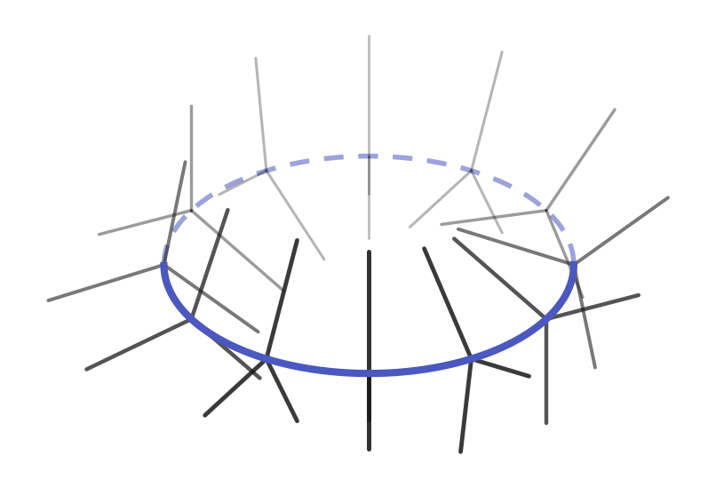
That flanged object has a name—a pinwheel—and the recipe for it is charmingly simple: take a circle, take a disc, and glue the boundary of the disc onto the circle, but wrap it around \(p\) times on the way.9 The number \(q\) is bookkeeping that records how the wrapping twists as it goes. Between them, \(d\), \(p\) and \(q\) are the three dials on the machine, and each setting gives a different manifold.10
Inside \(B_{d,p,q}\), that chain of plumbed tangent bundles leaves behind a chain of \(d-1\) Lagrangian 2-spheres, each meeting the next at a single point:
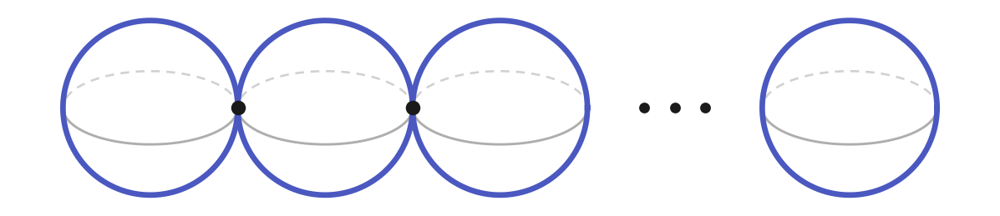
These are the standard spheres—exactly the sense of “standard” we discussed earlier. They’re the ones we can see, the ones that come for free with the construction. And the question my thesis answers is: are there any others?
The answer is that there are, of course, infinitely many others—we can twist, after all, and we saw where that leads. But the theorem says that twisting is the only thing going on:
Let \(L \subset B_{d,p,q}\) be a Lagrangian sphere. Then \(L\) is Lagrangian isotopic, up to twisting, to one of the “standard” spheres.
In other words: take any Lagrangian sphere in \(B_{d,p,q}\), however exotic, and you can untwist it—by twisting about the standard spheres, and by twisting about the pinwheel11—until it lands on one of the \(d-1\) spheres in the chain. Nothing else is hiding in there. Every Lagrangian sphere in \(B_{d,p,q}\) is a standard one that’s been knotted up, and knotted up in a way that we can completely describe.
A closing remark, in case you’re wondering how much the dials matter: when \(d = 1\) the chain is empty and there are no Lagrangian spheres in \(B_{d,p,q}\) at all. Just the pinwheel, sitting there on its own.
Coda
And that picture at the very top of the page? That’s one way that mathematicians draw \(B_{d,p,q}\) in practice.12 It’s a kind of shadow of the 4-dimensional manifold cast down onto a flat piece of paper. A standard Lagrangian sphere casts a shadow that covers the dotted line connecting the two crosses, and the pinwheel casts a shadow over the dotted line connecting the leftmost cross with the corner of the wedge.
If you’d like the version with all the details—the \(J\)-holomorphic curves, the neck stretching, the Lefschetz fibrations, and the many other things I have skipped over—it’s on the arXiv as Lagrangian spheres and cyclic quotient T-singularities.
Footnotes
What we usually think of as the sphere (something that looks like a globe) is defined in mathematics as the solution to the quadratic equation \[x^2 + y^2 + z^2 = 1,\] which represents all the points in 3D space that are a fixed distance of 1 away from the origin. The circle is similarly defined as the solution to the equation \[x^2 + y^2 = 1.\] The relationship between these equations is clear, hence the terminology of one- and two-dimensional spheres. We can go further and define the \(n\)-dimensional sphere as the solution to the equation \[x_1^2 + x_2^2 + \ldots + x_{n+1}^2 = 1.\] Of course, once \(n\) is bigger than 2, we can no longer faithfully visualise the resulting object, but the fact they form a family of similar geometric objects should be obvious.↩︎
It’s important here to note that any isotopy must occur solely on the 2D sphere itself. Due to our usual visualisation of the sphere inside 3D space it’s tempting to imagine things passing through the 3D interior of the sphere, but this is explicitly forbidden when considering isotopies on/in the sphere. If one imagines the 2-sphere as the Earth, our isotopy takes place somewhere on the Earth’s crust and cannot pass through into the mantle or any deeper layers.↩︎
One can also see this by realising that any circle on the sphere can be contracted to a single point. However, this violates a subtlety that I have said nothing about and will not: all of our Lagrangians should be embedded and a circle that is mapped to a point is not an embedding.↩︎
In the literature this is a Dehn twist, and in higher dimensions a generalised Dehn twist; I’ll just say “twist” throughout. If you have some topology, here is the thing that makes the subject tick: the square of a Dehn twist is always smoothly isotopic to the identity map, so as far as rubber-sheet topology is concerned, twisting twice does nothing at all. Symplectic geometry, however, remembers. In the cotangent bundle of the 2-sphere no power of the twist is symplectically trivial, whereas the squared twist about the antidiagonal in \(S^2 \times S^2\) is. Which of these two behaviours you get depends delicately on the ambient manifold, and sorting out which is which is a large part of what the subject is about.↩︎
A confession for anyone who goes on to read the actual paper: symplectic geometers work with the cotangent bundle of the circle, written \(T^*S^1\), rather than the tangent bundle \(TS^1\), because the cotangent bundle carries a canonical symplectic form with no extra choices required. For our purposes here the distinction is invisible—once you pick a metric the two are isomorphic—and tangent lines are much easier to picture than covectors.↩︎
And you’re an incredibly skilled pilot capable of maintaining an exact altitude, meaning your aircraft is always travelling at a perfect right angle to the radial vector pointing from Earth’s centre to your position.↩︎
This is essentially a polar coordinate system for the tangent plane.↩︎
The zero-section of a cotangent bundle is a model Lagrangian. A theorem of Weinstein says that every Lagrangian submanifold \(L\), in every symplectic manifold, has a neighbourhood that looks exactly like a neighbourhood of the zero-section in the cotangent bundle of \(L\). So the local picture is always the same one, and all the interesting behaviour is about how those local pictures are glued together globally.↩︎
For \(p=2\) this is a familiar object in disguise: a disc with opposite points of its boundary glued together is the real projective plane, \(\mathbb{RP}^2\). Generally, pinwheels are not manifolds—there is no neighbourhood of the core circle which is homeomorphic to a subset of \(\mathbb{R}^2\)—which is precisely why they’re interesting, and why \(B_{d,p,q}\) isn’t just a plumbing of cotangent bundles.↩︎
The constraints are that \(d, p, q\) are positive integers with \(p > q \ge 1\) and \(p, q\) coprime. Properly speaking, \(B_{d,p,q}\) is the Milnor fibre of the cyclic quotient surface singularity \(\frac{1}{dp^2}(1, dpq-1)\): you take a space with a sharp singular point, and smooth it out; what you get is \(B_{d,p,q}\). The plumbing description above is a picture of the answer, not the definition.↩︎
Twisting about a pinwheel is not something one can do just by analogy—a pinwheel isn’t a sphere—and constructing that symplectomorphism is a chunk of the work. It arises as the monodromy of the \(\frac{1}{p^2}(1, pq-1)\) singularity.↩︎
Note that this particular drawing is for \((d,p,q) = (2,2,1)\).↩︎